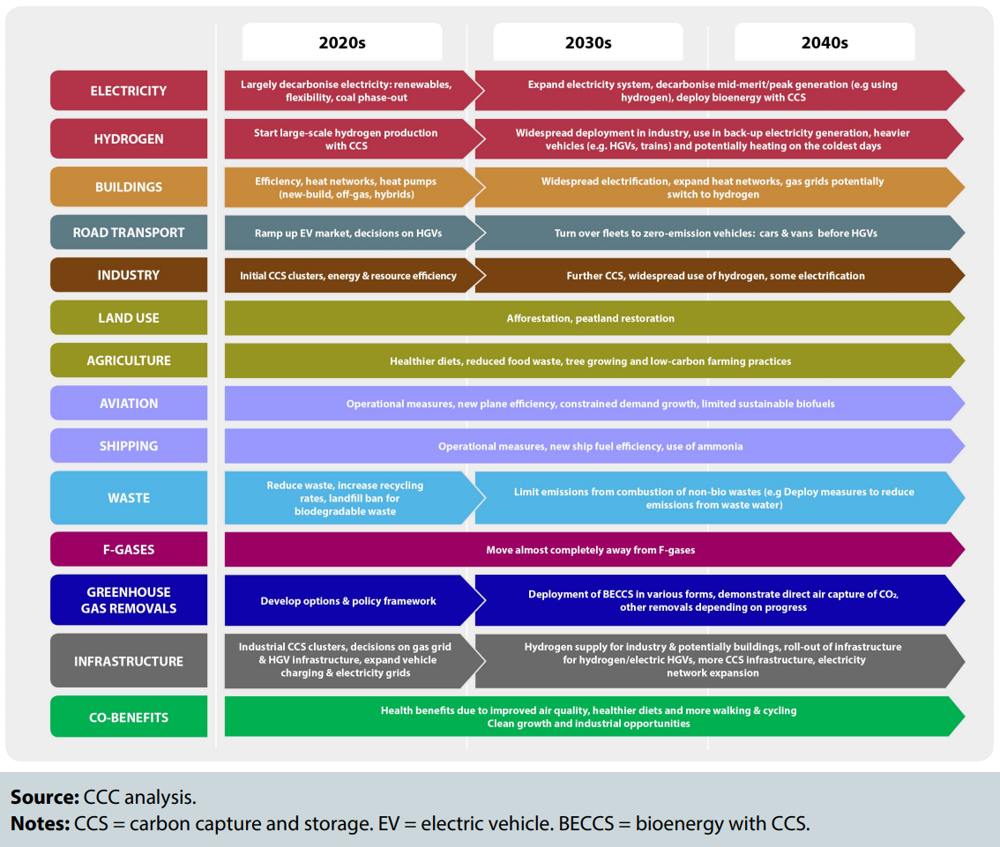

Chapter 3: Part 1
Actions to Reduce Emissions
We use several indicators to judge the progress being made towards meeting carbon budgets and the 2050 target (although these will need to be revised to align to the new net-zero target for 2050). Currently, just seven our of our 24 2018 indicators are on track, consisting mainly of indicators concerning power and industry sectors.
- The areas of transport, buildings, agriculture and land use has shown a lack of progress in deploying emissions reduction measures, and thus are not on track in regards to almost all of our indicators concerning these area.
- The power sector has shown good progress. We believe this is the result of strong policy, which has incentivised renewable power generation and driven down cost in doing so, and pushed coal to the margins of the electricity system through carbon pricing. This represents a significant success, which we hope can be replicated in other sectors in the future.
- High-level progress in industry has been encouraging, however it is unclear whether this is due to action within policy or wider shifts in technology and the economy.
Chapter 3: Part 3
The Net-zero Challenge: what is needed from policy now
In May 2019, the Committee recommended that the UK set a net-zero greenhouse gas emissions target for 2050. The Government and Parliament accepted this advice and on 27 June 2019 the target became law.
This target is achievable with known technologies, alongside improvements in people's lives, and within the expected economic cost that Parliament accepted when it legislated the existing 2050 target for an 80% reduction from 1990.
Extensive changes, however, will be required across the economy, with complete switchovers of several parts of the UK capital stock to low-carbon technologies and development of new industries for carbon capture and storage and low-carbon hydrogen production. Major infrastructure decisions need to be made in the near future and quickly implemented, and the public will need to be engaged in making the required changes.
click on the image to enlarge it
Urgency in plans
There is a need for increased ambitions in several areas:
- 2040 is too late for the pase-out of petrol and diesel cars and vans.
- Over ten years after the Climate Change Act was passed, there is still no serious plan for decarbonising UK heating systems or improving the efficiency of the housing stock, while no large-scale trials have begun for either heat pumps or hydrogen. The low-carbon skills gap has yet to be addressed.
- Carbon capture and storage has not yet been started. Global progress has admitted been slow, but nevertheless there are now 43 large-scale projects operating or under development around the world.
- Afforestation targets for 20,000 hectares/year across the UK nations (due to increase to 27,000 by 2025), are not being delivered, with less than 10,000 hectares planted annually on average over the last five years, although the strong increase in Scotland over the last year is encouraging.
- The voluntary approach that has been pursued so far for agriculture is not delivering reductions in emissions.
- There remains no route to market for onshore wind and solar PV, which are the lowestcost forms of low-carbon electricity generation and can contribute significantly to costeffective near-term decarbonisation.